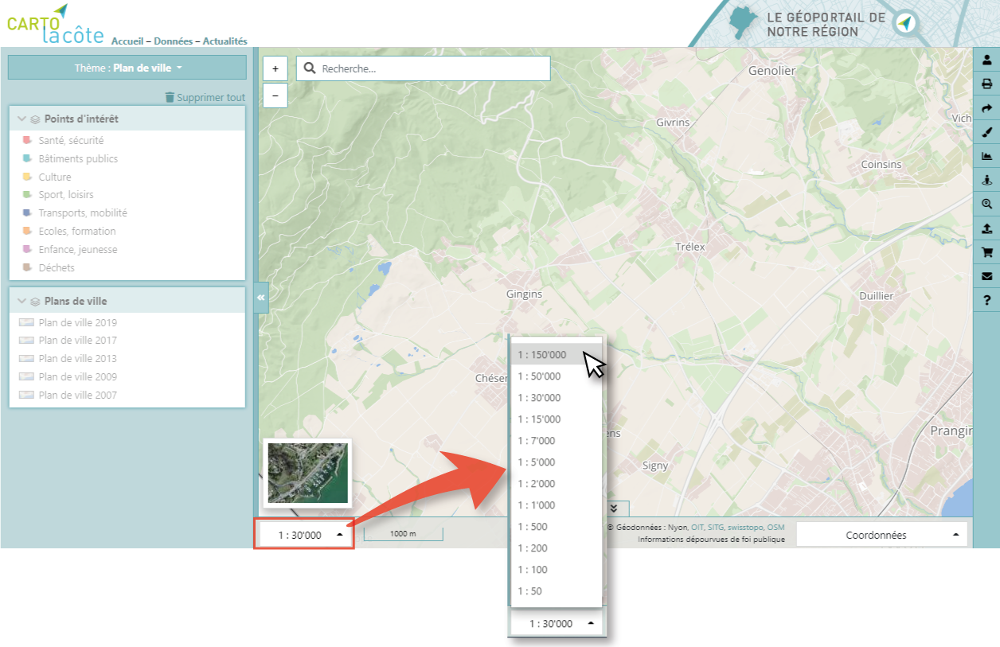

Navigation¶
Déplacement¶
Le déplacement dans la carte se fait à l’aide de la souris avec le « drag and drop »
Zoom¶
Le zoom dans la carte peut se faire de plusieurs façons :
À l’aide de la souris
À l’aide des boutons en haut à gauche de la carte
À l’aide du clavier et de la souris
À l’aide du sélecteur d’échelle en bas à gauche de l’interface
À l’aide de la souris¶
Avec la roulette
Avec un double clic
À l’aide des boutons en haut à gauche de la carte¶
À l’aide du clavier et de la souris¶
En dessinant un rectangle avec la touche SHIFT enfoncée
À l’aide du sélecteur d’échelle en bas à gauche de l’interface¶
Coordonnées¶
Les coordonnées (choix du système de coordonnées avec la liste déroulante) du curseur sont indiquées danns le pied de page, en bas à droite :
Un clic droit sur la carte permet d’obtenir les coordonnées et l’altitude du point :
Il est également possible d’afficher cet endroit dans Google Street View ou Google Earth, pour autant que des données existent.